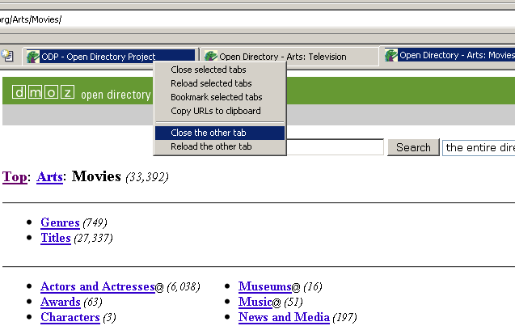

The idea of this extension comes from one of my favorites Firefox add-ons by piro http://piro.sakura.ne.jp/xul/_multipletab.html.en
I started to build this extension for Komodo Edit (see: http://www.activestate.com/komodo-edit ), then I noticed that SeaMonkey users will benefit from making very little changes to this code.
Usage is very simple, you just click and hold your mouse a little bit, the selection of tabs will starts after 200ms. You just move your mouse hover the tabs you want to select and when you just release the click a popup with options will appear.
By clicking the install button you will be asked to download the XPI file. After downloading the file, you just drop the file into your browser and an installation prompt will popup.
You can extend this add-on by adding new commands for selected and non selected tabs. (I'll prefer you submit your code to this extension via github.)
An example for selected tabs:
<?xml version="1.0" encoding="UTF-8"?> <overlay xmlns="http://www.mozilla.org/keymaster/gatekeeper/there.is.only.xul"> <window id="main-window"> <menupopup id="titoTMH"> <menuitem label="My command for selected tabs" labelSelectedMultiple="My command for selected tabs" labelSelectedSingle="My command for the selected tab" oncommand="myExt.myCommand()"/> </menupopup> </window> </overlay>Then define your command with something like this:
myExt.myCommand = function ()
{
var selectedTabs = titoTMH.getSelectedTabs();
for(var i=0;i<selectedTabs.length;i++)
{
alert('User has selected the tab with URL: '+
gBrowser.getBrowserForTab(selectedTabs[i]).currentURI.spec
);
}
}
<?xml version="1.0" encoding="UTF-8"?> <overlay xmlns="http://www.mozilla.org/keymaster/gatekeeper/there.is.only.xul"> <window id="main-window"> <menupopup id="titoTMH"> <menuitem label="My command for NON-selected tabs" labelNonSelectedMultiple="My command for NON-selected tabs" labelNonSelectedSingle="My command for the NON-selected tab" labelNonSelectedNone="My command for NON-selected tabs" disabledIf="noOthers" oncommand="myExt.myCommand()"/> </menupopup> </window> </overlay>Then define your command with something like this:
myExt.myCommand = function ()
{
var nonSelectedTabs = titoTMH.getNonSelectedTabs();
for(var i=0;i<nonSelectedTabs.length;i++)
{
alert('User has omitted from the selection, the tab with URL: '+
gBrowser.getBrowserForTab(nonSelectedTabs[i]).currentURI.spec
);
}
}
License: GNU GENERAL PUBLIC LICENSE Version 3, 29 June 2007
Source-code: https://github.com/titoBouzout/seamonkey-tab-multiple-handler
Home-page: http://titobouzout.github.com/seamonkey-tab-multiple-handler/
mozillaZine thread: http://forums.mozillazine.org/viewtopic.php?f=3&t=2236433
You can also clone the project with Git by running:
$ git clone git://github.com/titoBouzout/seamonkey-tab-multiple-handlerContributions to the code are very welcome.